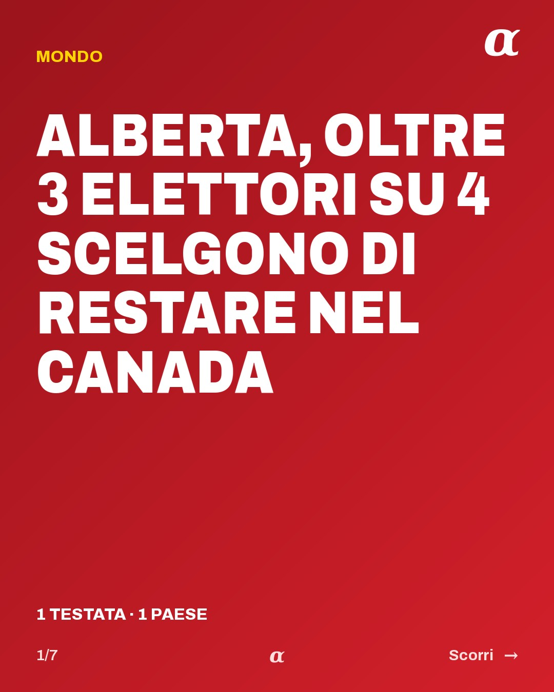
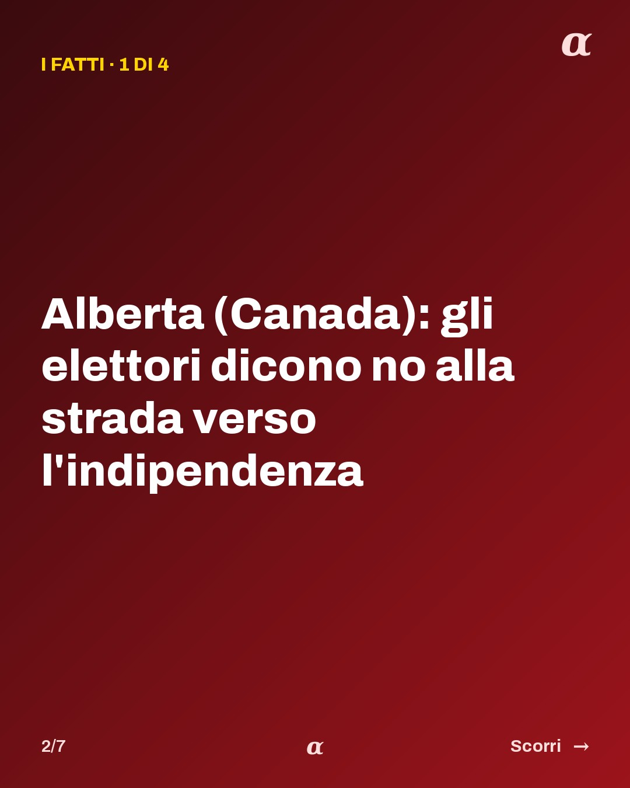
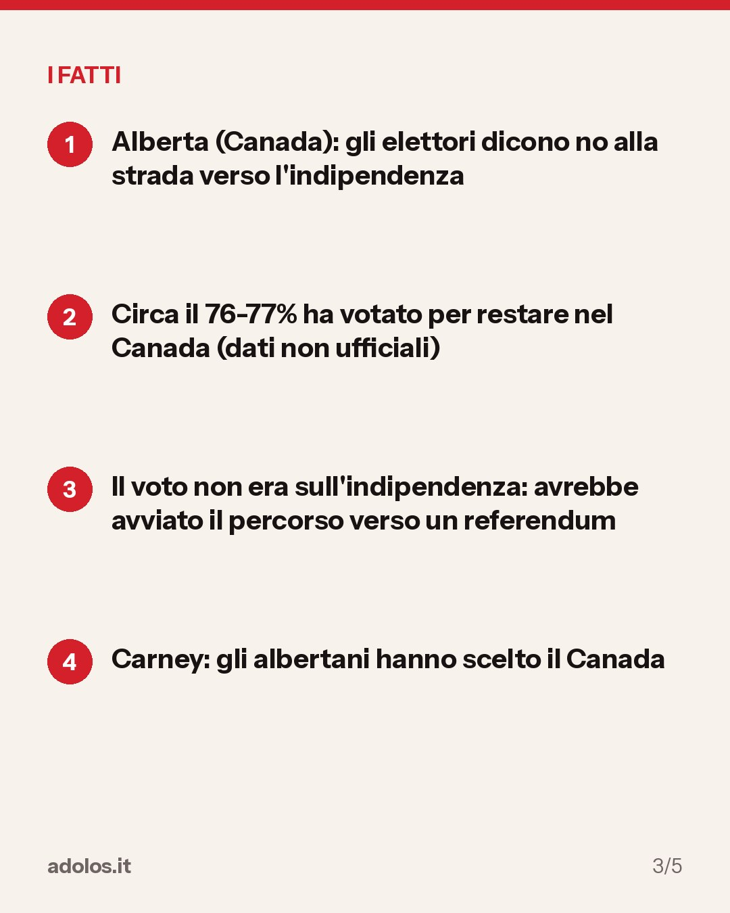
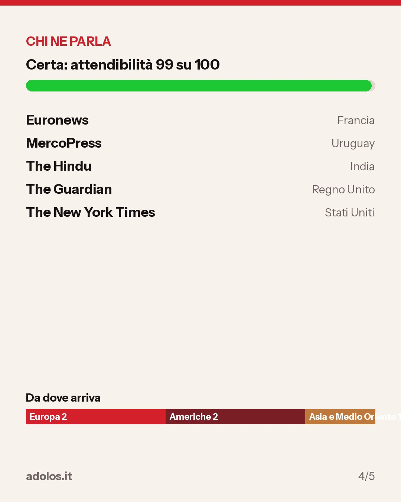
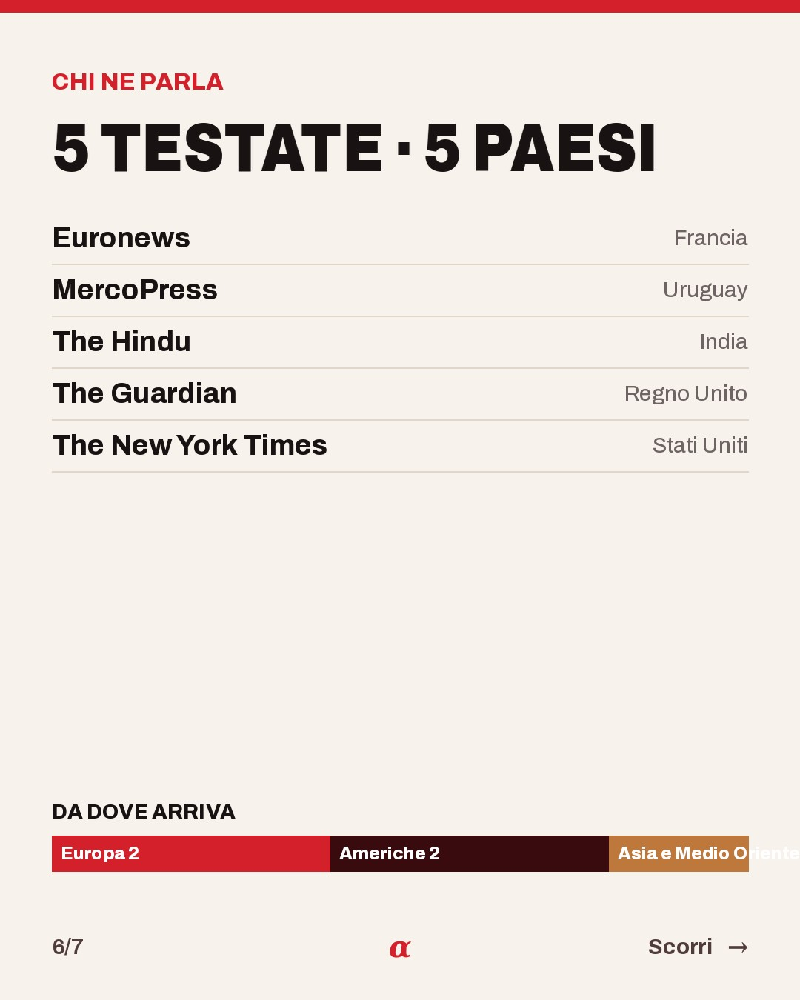

In breve
Lunedì 19 ottobre gli elettori dell'Alberta, provincia occidentale del Canada, hanno respinto la proposta di avviare il percorso verso un referendum per separarsi dal Paese. Secondo i dati non ufficiali riportati da Euronews e MercoPress, circa il 76-77% ha votato per restare. Il primo ministro Mark Carney ha detto che gli albertani hanno scelto l'unità del Canada; la premier della provincia, Danielle Smith, ha parlato di un'Alberta più forte dentro un Canada unito. Secondo Euronews i leader separatisti dicono che andranno avanti.
- Alberta (Canada): gli elettori dicono no alla strada verso l'indipendenza
- Circa il 76-77% ha votato per restare nel Canada (dati non ufficiali)
- Il voto non era sull'indipendenza: avrebbe avviato il percorso verso un referendum
- Carney: gli albertani hanno scelto il Canada






Come sta andando
- 18:24 Esce per prima su The Guardian
- 04:51 Prima conferma da The New York Times, dopo 10 h 27 min
- Adesso 2 testate in 2 paesi
Chi ne parla
Europa1
Americhe1
Asia e Medio Oriente0
Africa0
Oceania0
Ripresa da 2 testate in 2 paesi: The Guardian, The New York Times. La prima a darla è stata The Guardian (Regno Unito), 20 ottobre 2026, ore 18:24.
Chi la riporta
- The Guardian da Regno Unito, 20 ottobre 2026, ore 18:24Leggi l'articolo su theguardian.com ↗
- The New York Times da Stati Uniti, 21 ottobre 2026, ore 04:51Leggi l'articolo su nytimes.com ↗